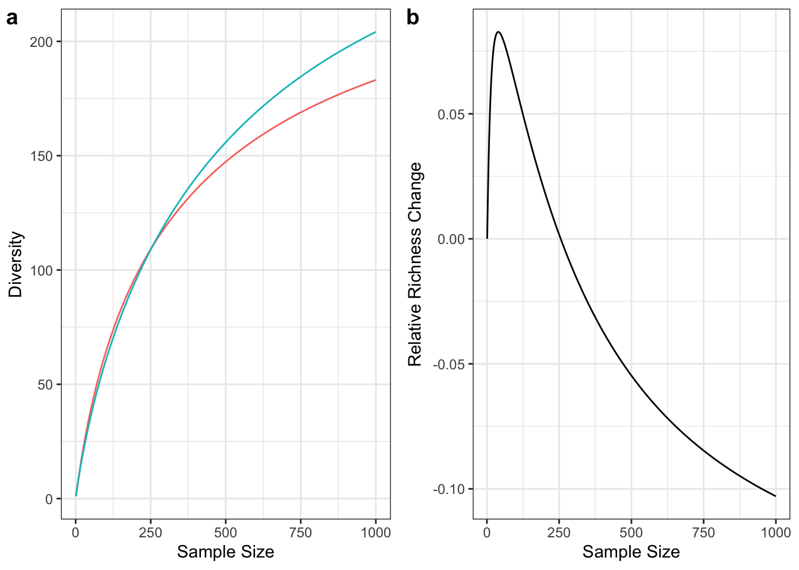
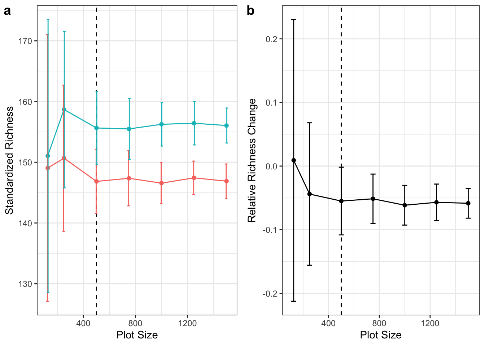

Tree diversity changes estimation issues. Commentary on Fadrique et al. (2026)
Abstract
Issues in the estimation of yearly richness change the Amazon derived by Fadrique et al. (2026) in Nature Ecology & Evolution are addressed. Richness change was not standardized to a consistent plot size, preventing comparing it between plots, and the yearly richness change was calculated with a linear approximation leading to its underestimation in long-term plots. The necessary methods are proposed to correct these issues.
1 Introduction
Fadrique and colleagues (Fadrique et al. 2026) assess the long-term variations of species richness in the Amazon and explore their determinants. The way they estimate the yearly richness change in each of the 406 plots used in the study faces two methodological issues that are serious enough to question the results and justify recomputing it.
The consequences of unequal plot sizes are shown in the first section of this reply, followed by those of the linear approximation of richness change along years. The last section suggests the methods to deal with these issues.
Examples below were made with the divent package (Marcon and Puech 2026) for R (R Core Team 2026).
2 Plot sizes
Richness change is characterized in the article as a relative increase or decrease compared to the initial number of species. Yet, the number of species and its change depend on the area of each plot. Plots are samples of local communities of trees: their richness depend on the species distribution in the community they belong to and of their size. The species accumulation curves (Gotelli and Colwell 2001), i.e. the expected richness with respect to sample size, can be computed easily (Chao et al. 2014).
Figure 1a shows the species accumulation curves of two communities. The initial one is simulated in a log-normal distribution with standard deviation 1.3 and 300 species. The final one is drawn in the same distribution with 20% less species. The observed richness change relies heavily on the plot size (Figure 1b). The same changes in the community distribution imply completely different observed changes in plots of different sizes, that may even be contradictory: richness gain here according to a 125-tree (around 0.25-ha) plot versus richness loss in a 500-tree (1-ha) plot. Figure 1 is just an illustration. Various simulations show unpredictable shapes of the relative richness change curve: the difference of richness clearly increases with plot size but both initial and final richness increase, so their ratio may vary in different directions, even though it will ultimately reach an asymptote (-20% in Figure 1b).
Richness change thus cannot be compared between plot of different sizes: the same variation in the species distribution of the local community has quantitatively and, for small plots, sometimes qualitatively different effects on richness change.
3 Yearly richness change

In the article, yearly richness change is calculated as
\[ r = ({SP}_{final} - {SP}_{initial}) / {SP}_{initial} / {time} \tag{1}\]
even though it is incorrectly reported as the opposite in the text. The multiplication by 100 to obtain a percentage is omitted here. This equation can be rearranged as
\[ {SP}_{final} = {SP}_{initial} * (1 + r * {time}). \tag{2}\]
The purpose is to estimate an average yearly richness change, whatever the time interval. Then, richness at time \(t+1\) is richness at time \(t\) multiplied by \(1+r\), whatever \(t\) during the interval. Thus, the correct way to calculate \(r\) is derived from the relation
\[ {SP}_{final} = {SP}_{initial} * (1 + r)^{time}. \tag{3}\]
This is the discrete form of an exponential variation. The linear approximation (Equation 2) used in the article is acceptable for small intervals but leads to large error over decades.
The correct richness loss is obtained by solving the previous equation:
\[ r = \left({SP}_{final} / {SP}_{initial}\right)^{1 / {time}} - 1. \tag{4}\]
An example is shown in Figure 2. Starting from 150 species, \(r\) is arbitrarily chosen equal to 1% per year. After 40 years, the final number of species (Equation 3) is close to 100, rather than 90 according to Equation 2. Equation 1 used in the article estimates the species loss to be 0.83% instead of 1%.
The error increases with the absolute value of richness change: 5% yearly species lost during 40 years is estimated to be only 2.2% by Equation 1. Richness change absolute value is thus systematically underestimated in the article. The error increases with the interval between inventories and its actual value, making the more valuable data less reliable.
4 Appropriate methods

These issues can be corrected relatively simply. The first step consists of standardizing the plot size at the same area. Its choice has consequences on the results and their significance: the smaller the plots, the lower the ability to take into account species that are not the most abundant (Grabchak et al. 2017). The richness of larger plots can be rarefied with no limit and that of smaller plots extrapolated (Gotelli and Colwell 2001).
Figure 3a shows the average richness estimation, standardized at 500 trees (i.e., 1 ha, assuming density is 500 trees/ha), of 100 simulated plots of sizes varying from 125 to 1500 trees (1/4 to 3 ha) drawn in the communities of 300 and 240 species. Richness change is calculated for each pair of simulated plots and represented in Figure 3b. In contrast with Figure 1b, it is independent from plot size.
Extrapolation over twice the original size is considered risky (Chao et al. 2014) (the 125-trees plots in Figure 3b do not allow estimating richness change correctly) so the standard size may have to be reduced if too many small plots are used. The trade-off is between larger standardized plots, including information about more species and smaller plots to limit extrapolation uncertainty. Since the average plot size is 1.23 ha, 1 ha may be a good choice: a round size, used in many studies, has the advantage of allowing intuitive interpretation.
In practice, R packages iNEXT (Hsieh et al. 2016) or divent (used here) allow interpolating and extrapolating richness of an abundance distribution to the desired number of individuals. It must be derived from each plot’s tree density to reach the target area: the level (this is the name of the argument of the R functions) of interpolation or extrapolation is \(n * A_{target} / A\) where \(n\) is the number of trees in the plot of area \(A\) and \(A_{target}\) is the target area. For instance, extrapolating the diversity of a half-hectare plot with 300 trees up to one hectare area implies extrapolating up to 600 trees.
The standardized initial and final richness of each plot will then be available. The second step is calculating richness change according to Equation 4. Then, all analyzes can be run again.
5 References
Chao, Anne, Nicholas J. Gotelli, T. C. Hsieh, et al. 2014. “Rarefaction and Extrapolation with Hill Numbers: A Framework for Sampling and Estimation in Species Diversity Studies.” Ecological Monographs 84 (1): 45–67. https://doi.org/10.1890/13-0133.1.
Fadrique, B., F. Costa, F. Cuesta, et al. 2026. “Tree Diversity Is Changing Across Tropical Andean and Amazonian Forests in Response to Global Change.” Nature Ecology & Evolution 10 (2): 267–80. https://doi.org/10.1038/s41559-025-02956-5.
Gotelli, Nicholas J., and Robert K. Colwell. 2001. “Quantifying Biodiversity: Procedures and Pitfalls in the Measurement and Comparison of Species Richness.” Ecology Letters 4 (4): 379–91. https://doi.org/10.1046/j.1461-0248.2001.00230.x.
Grabchak, Michael, Eric Marcon, Gabriel Lang, and Zhiyi Zhang. 2017. “The Generalized Simpson’s Entropy Is a Measure of Biodiversity.” Plos One 12 (3): e0173305. https://doi.org/10.1371/journal.pone.0173305.
Hsieh, T. C., K. H. Ma, and Anne Chao. 2016. “iNEXT: An R Package for Interpolation and Extrapolation in Measuring Species Diversity.” Methods in Ecology and Evolution 7: 1451–56. https://doi.org/10.1111/2041-210X.12613.
Marcon, Eric, and Florence Puech. 2026. Divent: Entropy Partitioning to Measure Diversity. https://ericmarcon.github.io/divent/.
R Core Team. 2026. R: A Language and Environment for Statistical Computing. R Foundation for Statistical Computing. http://www.r-project.org.